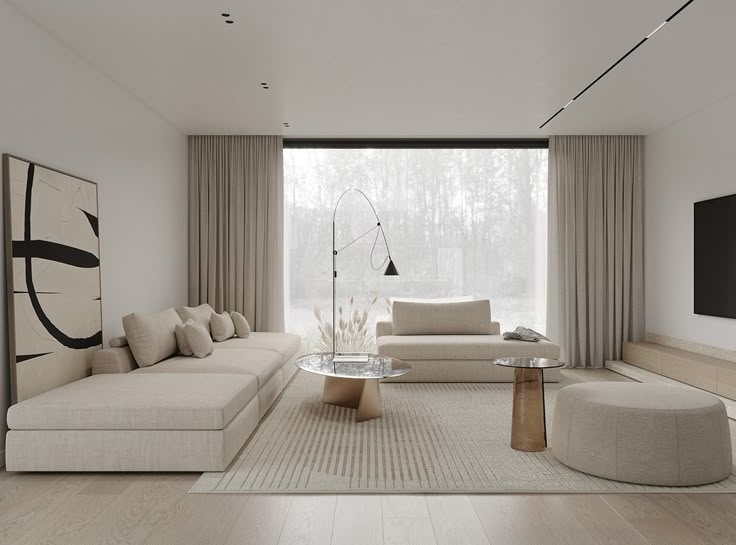
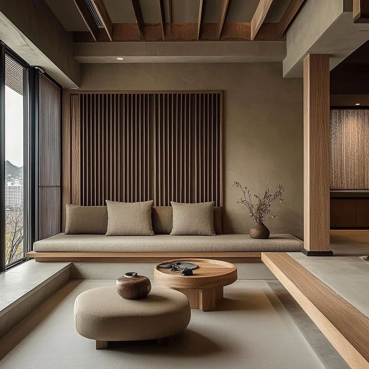
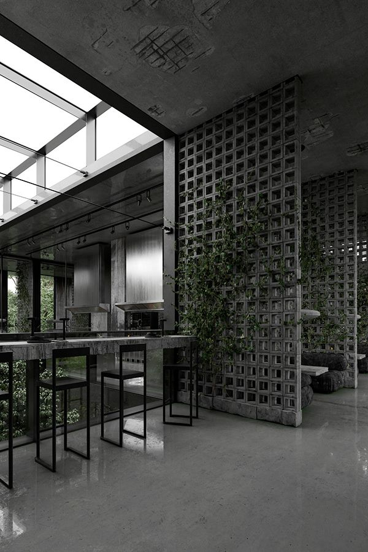

Минимализм

Основная цветовая гамма
Белый, серый, черный, бежевый, графитовый
Краткое описание стиля
Философия «меньше значит больше». Это максимальная функциональность, идеально ровные поверхности, отсутствие декора и тщательно продуманные системы хранения, чтобы ни одна лишняя вещь не попадалась на глаза.
Разновидности минимализма
| № | Разновидность стиля | Фото дизайна | Краткое описание |
|---|---|---|---|
| 1 | Джапанди |  |
Союз японского минимализма и скандинавского уюта. Аскетичность, темное дерево + тепло, уют и светлая гамма. Спокойный, медитативный интерьер. |
| 2 | Брутализм |  |
Суровая индустриальная версия. Бетон, грубая штукатурка, кирпич, металл. Красота в честности и текстуре материалов, монолитности форм. |